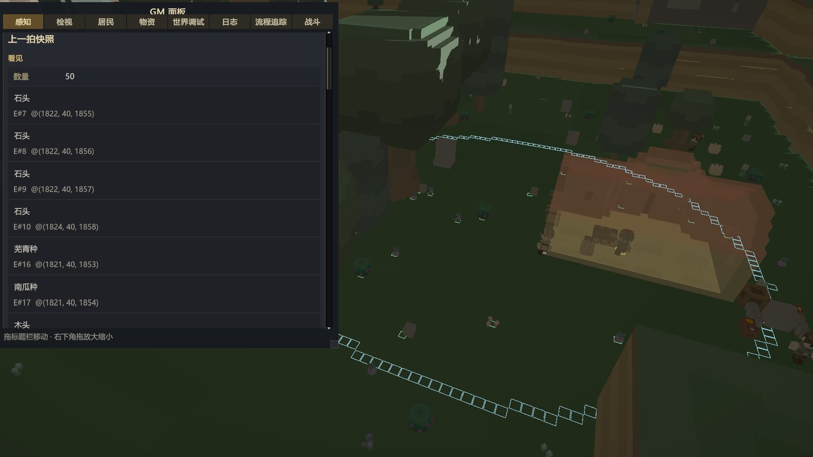

2026.10.26
技术笔记第一期——感知系统

什么是Agents的感知？
- 要回答这个问题，首先我们需要回答，为什么要做Agent的感知？回想项目目标，我想做的是一个甚至是一群可以在设定的游戏世界中自主生存的Agent，因此Agent必须有一种手段，能够获取到游戏世界内的信息。
- 这种手段就是感知，在本项目中，Agent的感知被定义为“在一定范围内，对该范围内有限的物体的带有遮挡的列表查询能力”。即Agent可以对其所在点的一定范围内的物体进行列表查询并获取其相关信息的能力。
本项目Agent的感知
感知范围设定
- 出于对真实视野和游戏性的双重考量，我将Agent的感知范围定义为了一个椭圆，Agent所在位置为椭圆的其中一个焦点，其前方视野更长、后方较短。前后为长轴，两侧为短轴。
感知逻辑
- 感知范围计算：定义椭圆参数a=32，c=16，b=27.7。Agent站在其中一个焦点上，对一个目标，首先计算其相对于Agent的格差/坐标差(dx, dz)，若该值不在椭圆内直接舍弃。随后，把Agent的朝向换算为单位向量(fx, fz)（东是 (1, 0)，北是 (0, 1)）：
u = fx·dx + fz·dz − c
v = fx·dz − fz·dx - u 是目标沿长轴、相对椭圆中心的位置。v 是它离开长轴的侧向距离。代码写成整数比较，避免开方：
long u = (long)fx * dx + (long)fz * dz - focusDistance;
long v = (long)fx * dz - (long)fz * dx;
return u * u * b2 + v * v * a2 <= a2 * b2; - 感知遮挡计算：从Agent眼睛高度“绘制”一条到目标物体的水平线，若该水平线没有被体素、其他物体遮挡，则判定为无遮挡，Agent可以将该物体作为决策的输入，若有遮挡，则该物体依然会出现在感知列表中，但是会被标记，并且不会作为决策输入依据。
private bool IsOccluded(VoxelCoord from, VoxelCoord to)
{
// ... Bresenham 沿 (x,z) 走 ...
int eyeY = from.y + visionHeight;
while (x0 != x1 || z0 != z1)
{
// ... 步进 ...
if (x0 == x1 && z0 == z1)
{
break; // 终点格不采样
}
if (voxelWorld.TryGetVoxel(x0, eyeY, z0, out Voxel voxel) && !voxel.IsEmpty)
{
return true;
}
}
return false;
}感知规则
- 实体感知：世界中的实体，挂载于实体注册表上，Agent的感知会将实体注册表中的实体都取出，依次计算一次实体到Agent的距离，若超出距离，则判定该实体不在感知范围内。
- 世界列感知：除了实体外世界中的其他物体，如树、浆果丛等内容。这类物体的感知，是以Agent为中心的一个椭圆范围内的实体列会被逐列扫描，每一格会先计算距离，再判断遮挡。若通过判断，则记录进感知列表中。
- 感知频次：Agent并不会每一帧、每一秒进行感知，其感知频次分为：定时感知和事件感知。具体为，定时感知是隔一段时间会进行一次感知刷新，作用是低频次地更新感知。事件感知是当Agent需要决策、收到事件等情况时，及时更新感知，确保决策时的感知输入是最新的。
为什么选择该方案？
- 世界是3D体素世界，并没有设置碰撞体，因此没有使用unity传统的方案，如全图查询、OverlapSphere等。
目前尚存问题
- 实体没有半径粗筛，尚未添加初筛规则，会每次都对实体进行逐个求距离值并判定。
- 地形列和物体是硬扫，对范围内每一列进行查询。
如何进行验收？
- Gizmos：绘制Agent的感知范围，并将每一位Agent的感知内容显示在GM面板中。在实际测试的过程中，可以点选对应Agent并暂停游戏，查看其感知内容是否正确、是否存在遗漏。
- Profiler分析：尚未进行。